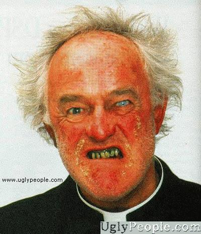

Forums galactiques > Taverne galactique : lieu de discussion informel > Grand jeu concours.
Alexei Pokryshkin 30/06 ETU 15:10 | C'est assez drôle très cher, Maintenant petit cours de littérature étrangère: "Fedayn: la révolution palestinienne à travers sa culture et ses chants" de Dario Fo (D'ailleurs je vous conseille "Mort accidentelle d'un anarchiste") Cette pièce de théâtre adaptée en bouquin : on apprend que Fedayn signifie en arabe "celui qui se sacrifie": les combattant s'accrifiés "contre l'agression israëlienne et le colonialisme sioniste" (expulsion des palestiniens de leur propre territoire). "Fedayn avec ton histoire tragique, chassé de ta propre terre, tu veux t'armer pour la reconquête de ton identité perdue" |
Alexei Pokryshkin30/06 ETU 15:22 | "...tu te bât contre l'oppresseur avec tes frères arabes, tu te bât contre le travil forcé, le colonialisme, l'impérialisme" .... Fo annonce aussi dans sa pièce " Fedayn ton sacrifice fut tragiquement instrumentalisé par la bourgeoisie italienne devenu la nouvelle force des groupes fascistes... Ton sacrifice, tes attaques non organisées,nées d'une haine de l'impérialisme occidental, des monarchies repris par ces bourgeois qui pour une seconde fois t'oppressent. Reprenant le sens de ton sang et justifier les régimes de petits bourgeios contrebandiers progressistes du révisionisme international.... Meurs Meurs aux yeux du monde tu es un lâche... Meurs meurs dans ta situation tragique" |
yankee 30/06 ETU 15:23 | Toutes vos versions sont peut etre juste, mais les groupes de supporters Fedayn ont exactement le meme symbole que Fedayn a ici ... C'est tout de meme convinquant non ? |
Alexei Pokryshkin30/06 ETU 15:25 | Enfin pour terminer les vers que j'aime bien: "Tu veux mourir même si cela ne sert à rien ? Tous unis ! , tous ensemble! Mais excuses moi quel est ton nom? - Fedayn" Pour une fois que les cours de littérature italienne à la fac servent à qq choses! |
Alexei Pokryshkin30/06 ETU 15:32 | Yankee, je suis d'accord avec vous. Mais cela me pose un problème: SOIT notre fedayn a pris ce pseudo pour soutenir le combat des Fedayn palestiniens (Anti monarchistes, anti colonialistes...) SOIT il a pris le pseudo en pensant à des matchs de foot. La je fais une extrapolation: Les "supporters de la Roma" se sont unis en 1972 (2 après les premières guerres de libération) Fo lui écrit aussi sa pièce de théatre en 1971: pour combattre les groupes fascistes mal organisés italiens qui ont repris l'appelation "Fedayn". Là y a problème: pour moi les Fedayn de la Roma sont plutôt des groupes fascistes (enfin c'est l'effet que cela me fait). Alors Fedayn: libération palestinienne ou Fedayn: groupes fascistes Y a peut être des conceptions différentes. Enfin ce que j'en dis. |
Alexei Pokryshkin30/06 ETU 15:34 | Par contre après recherche sur le net, les supporters autrichiens appelés Fedayn sont des supporters neonazis, ce qui conforte mon point de vue. |
Obiwan Kénobi 30/06 ETU 15:34 | Je crois que les recopieurs de google ne se donnent pas beaucoup de mal... |
Alexei Pokryshkin30/06 ETU 15:37 | Si tu parles pour moi Obi, Le recopiage est plutôt axé sur des livres littéraires (tu sais les choses lourde avec plein de signes et pas d'images). De plus le net c bien du moment où on sais chercher. Par contre l'analyse est personnelle et demande d'être critiquée avec des personnes sensées. |
yankee30/06 ETU 15:38 | Pour les supporters de la Roma vous avez raison, il paraitrait meme que le comité directeur soit aussi fasciste, tout comme a la Lazio. Ces deux clubs de foot sont réputés pour ça (désolé pour les fans ^^). Il me semble qu'il y a quelques années il y avaient pas mal de problèmes de racisme. |
yankee30/06 ETU 15:42 | En fait en Italie, il y avaient pas mal de clubs fascistes surtout dans le Sud (c'est aussi la que la mafia est très présente ...), c'est peut etre pourquoi les supporters des équipes comme l'AS Roma ou encore Naples se sont appelés "Fedayn". De plus ils se placent dans les parties sud des stades ... |
Agarash 30/06 ETU 15:56 | laisser tomber les 20 million sont pour moi .... ^^ |
Agarash30/06 ETU 15:56 | laisser tomber les 20 million sont pour moi .... ^^ |
Alexei Pokryshkin30/06 ETU 15:58 | D'accord, merci pour ces compléments. Donc si je suppose que les joueurs d'Apocalypsis sont quand même intelligents je pencherais sur le fait que Fedayne faisait rapport aux combattants palestiniens et non aux fascistes. |
yankee30/06 ETU 15:59 | C'est une solution ... |
| Luther  30/06 ETU 16:07 | Fedayn est né dans une famille modeste d'une planete eloignée, mais sa naissance s'est faite sous le signe de la soufrance, puisque ses parents ont été vendus par les mercrenaires grégiens à des esclavagistes. Orphelin et laissé pour mort, le pauvre bébé fut receuilli par un vieil homme sage et pauvre. En grandissant, il apparut que fedayn souffrait terriblement de l'absence de ses deux parents, et se renferma sur lui même de plus en plus jusqu'au jour où, âgé de 12 ans, il retrouva son père adoptif assassiné avec une phrase en rouge inscrite sur le dos "a refusé de payer l'impôt galactique". La douleur du jeune homme était à son paroxysme, et il rejoignit la résistance contre greg, à l'époque encore balbutiante. Ses qualités de meneur d'hommes, son intelligence tactique et sa détermination en firent rapidemment un élément clé traqué par les troupes du tyran. En raison de ses nombreux faits d'armes, fedayn acquit son nom de guerre au sein de la résistance: Fedayn précisemment, nom par lequel nous le connaissons tous aujourd'hui. Une planete isolée lui fut confiée, à partir de laquelle il créa peu à peu une république libre qui devait rapidemment devenir le coin le plus prospère de la galaxie. Devant cet affront, le tyran Greg pris d'assaut de nombreusers planetes et en extermina la population. Fedayn n'eut pas le choix, et se décida à définitivement libérer la galaxie du tyran. Aidé d'un jeune ami, il prépara alors pendant des semaines une opération immense qui mit définitivement fin au leadership de greg. Ses rêves je justice et d'équité allaient enfin pouvoir se réaliser... |
Agarash30/06 ETU 16:11 | jeunes amies , nous somme plusieurs a soutenir fedayn vous aussi luther , sa me faiit plaisir ^^ |
Fedayn 30/06 ETU 16:18 | J'ai pas tout lu mais petit indice, les fedayn ne sont pas du tout fascistes, au contraire, il se battent et resistent contre... |
Fedayn30/06 ETU 16:20 | D'ailleurs le choix du nom est explicite. Une analyse de leurs chants pourrait vous aider... |
HK-48 30/06 ETU 16:21 | Ils se battent contre ceux qui ne se soumettent pas à leurs idées (désolé je suis nul en Italien je ne suis pas sur que ce soit ça ^^)... |
Alexei Pokryshkin30/06 ETU 16:23 | Fedayn lit ce qui a été dit en page 4. J'ai pas écrit tout ça pour rien lol |
Forums galactiques > Taverne galactique : lieu de discussion informel > Grand jeu concours.